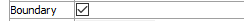
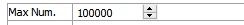
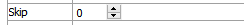
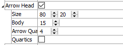
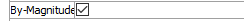
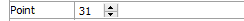
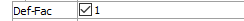

Vectors (Zones) Plot Item
Description
Vector data for a selected zone value.
Attributes
Value

Select which vector type to display.
| Acceleration | Reaction Force |
| Applied Force | Specific Discharge |
| Displacement | Thermal Flux |
| Out of Balance Force | Velocity |
Boundary
Control the method for limiting the number of vectors included in the plot item.
Boundary: set (checked) automatic determination of the inclusion limit. When unchecked, the following two attributes (Max Num and Skip) may be used to manually specify the inclusion limit.
Max Num.
Set the maximum number of items to render.
Max Num.: set the number.
Skip
Specify that every nᵗʰ zone should be skipped when generating vectors to render.
Skip: set the skip value.
Arrow Head
Control appearance of vector arrows.
Arrow Head: Include (checked) arrow head rendering on vectors.
Size: set the length and width of the arrow head, respectively.
Body: set the thickness of the arrow shaft.
Arrow Quality: set the number of “sides” to include in the arrow head (a sufficiently low number, e.g., “4”, will yield a “blockier” arrow head).
Quartics: use an alternative but faster (checked) rendering method for arrow heads than the default method. This may cause problems with some graphics cards.
By-Magnitude
Color vectors with the contour coloration or uniformly.
By-magnitude: Set (checked) coloring of vector arrows to match contour coloring (see Contour below). When unchecked, this attribute is followed by a Color attribute (see the standard color attribute desription for details) for assigning a uniform color to all vectors in the plot item.
Contour
Set the contour used to color the arrows. Refer to the standard contour control description for details.
Point
Set the size of the point used to indicate the vector’s point position. A Color attribute (see the standard color attribute description for details) is included when By-Magnitude is unchecked.
Point: set the size.
Point To Base

“Invert” the vector arrow so that the arrow head points at the point source of the vector.
Point to Base: set (checked) that the arrow head should point to the point source of the vector rather than emanate from it.
Scale

Scale the item. See the standard scale control description for details.
Map

Map the item to new model coordinates. See the standard map control description for details.
Def-fac
Set the deformation factor. See the standard def-fac control description for details.
Legend

Set item labeling in the plot legend. See the standard legend control description for details.
Beneath Title, the Vectors (Structural Elements) plot item also provides controls in Legend for Map, Def-Fac, Maximum, Scale, and Contour.
| Was this helpful? ... | UDEC © 2018, Itasca | Updated: Mar 15, 2024 |